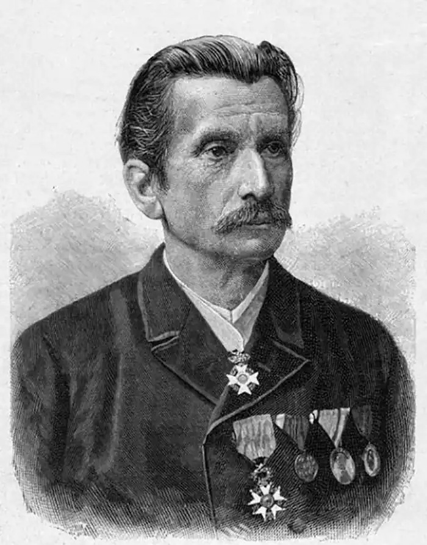
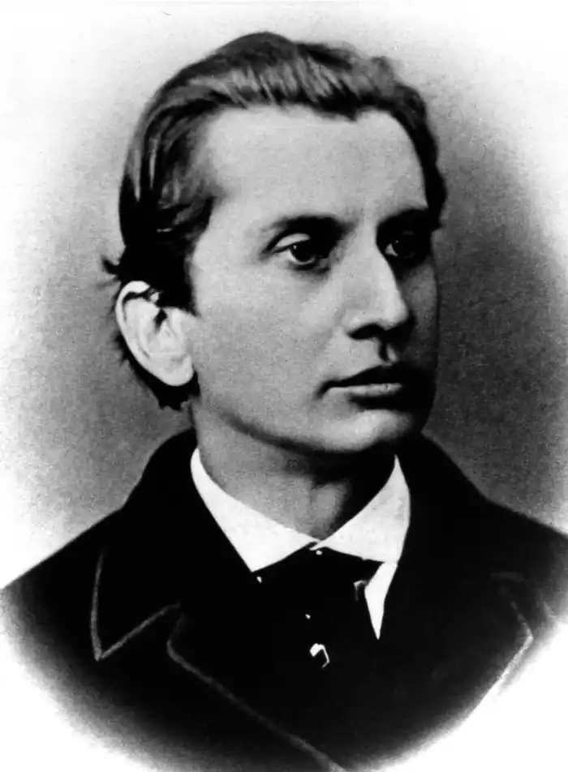

27 січня 1836 році у Львові, в родині начальника поліції королівства Галіції та Лодомерії(Володимирії) Леопольда Захера та у його дружини Шарлотти Мазох народився хлопчик Леопольд, якому судилося стати одним із найвідоміших в Світі уродженців Львова за всю історію існування міста. Батько хлопчика, Леопольд Захер, який походив із богемських німців, не відповідав уявленню про поліцейського офіцера. Він був високоосвіченою людиною й очолював Галицьке музичне товариство. Мати Леопольда, Шарлотта, була донькою ректора Львівського університету Франца фон Мазоха та походила по материнській лінії зі шляхетного українського роду.
Хлопчик Леопольд народився досить кволою дитиною. Щоб урятувати його знайшли добру годувальницю – українську селянку Ґандзю у Винниках неподалік Львова. Перші 12 років життя , тобто до 1848 року, коли родина Захерів переїхала зі Львова до Праги, пройшли для Леопольда в українському оточенні. Через багато років Леопольд, ставши вже всесвітньовідомим письменником і згадуючи про свою щиру годувальницю та своє дитинство серед українців, написав такі рядки: З її молоком я всмоктав любов до українців, ввібрав у себе українську мову та любов до краю свого народження, до своєї вітчизни. Завдяки моїй годувальниці українська мова стала першою, якою я оволодів. І саме вона розповідала мені чарівні українські казки або співала, заколисуючи мене , тож українські народні пісні запали мені в душу на ціле життя , залишивши слід у моєму житті, моєму емоційному світі та й у всіх пізніших працях. "Леопольд, який сам себе визначив як українця, далі пише: " На нас, українців, діють музика та спів, немов магія, з наших народних пісень ми чуємо голоси наших предків, що лежать поховані у високих могилах, духи лісу, води, повітря".
В Празі, яка в той час була німецькомовним містом, Леопольд навчався в гімназії, досконало вивчив німецьку мову, зростав в атмосфері модного тоді в Австрії просвітництва та лібералізму. Вищу освіту здобував в університетах Праги і Граца, куди його батька перевели на службу. Студіював юриспруденцію, математику, історію. У 19 років захистив дисертацію та почав працювати на посаді приват-доценту Грацького університету. З часом у Леопольда проявилася пристрасть до літературної діяльності. У 1858 він оприлюднив роман "Одна галицька історія. Рік 1846." Початок виявився вдалим , і Леопольд повністю поринув у літературну творчість. Писав п'єси, фейлетони, історичні дослідження. Знов у своїй літературній творчості звертається до галицької тематики, пише роман "Дон Жуан із Коломиї". Після успіху, пов'язаного з опублікуванням цього роману в Паризькому журналі у 1872 році, Леопольд покидає університет. З того часу він повністю присвячує все своє життя літературній творчості. У 1873 році Леопольд одружився з Ангеліною фон Рюмелін і переїхав з нею до Відня. Ангеліна була палкою прихильницею його творчості, пробувала й собі писати, взявши псевдонім Ванда фон Дунаєва – ім'я героїні його роману " Венера в хутрі ". Неймовірний потяг Ангеліни до світського життя й пов'язані з тим величезні витрати, довели талановитого письменника Леопольда фон Захер – Мазох до повного розорення та вимушеного літературного заробітчанства. На щастя, у 1881 році Леопольда запросили до Лейпцига видавати літературний журнал "Auf der Hohe" (На висоті), і він з родиною переїхав до Німеччини, залучивши до співпраці в журналі самих видатних авторів того часу, а саме: Віктора Гюго, Еміля Золю, Гі де Мопассана, Генріка Ібсена. У 1883 році Леопольд фон Захер–Мазох відзначив у Лейпцигу 25-річчя своєї літературної діяльності. Йому прийшли привітання із багатьох країн. Ювілей письменника справляли в багатьох містах Галичини. Як письменник, він був широко знаним в Європі, де твори виходили різними мовами і великими накладами, особливо він був популярним у Франції, де про нього високої думки були такі майстри художнього майстри художнього слова, як Олександр Дюма-батько, Альфонс Доде, Гюстав Флобер. У 1886 році Мазох був нагороджений найвищою нагородою Французької Республіки орденом Почесного Легіону. Не дивлячись на широку популярність журналу, головним редактором якого був Леопольд, через борги власника, журнал збанкрутував, до всіх негараздів в його житті добавилася смерть від тифу його сина, родина розпалася. У 1886 році Леопольд фон Захер-Мазох оселися зі своєю співробітницею, перекладачкою, а згодом дружиною Гульдою Майстер у її маєтку в Ліндгаймі в Гессені, де проживав до кінця свого життя, тобто до 9 березня 1895 року. Навіть перебуваючи на вершині слави, Леопольд фон Захер-Мазох завжди в подумах й у своїй творчості вертається до української тематики. Будучі високоосвіченою людиною, він однозначно трактував українців Австро-Угорської імперії та Російської імперії, як єдиний народ, з однаковою ідентичністю, менталітетом і особливою рисою, якою є волелюбність. В оповіданні "Жіночі образки з Галичини" він пише про українців: "Між Доном та Карпатами живуть вроджені демократи, ні візантійський імператор, ні варяги, ні який король Польщі не зламали їхнього духу, не підкорили їхньої свідомості …". Будучи німецькомовним письменником Леопольд фон Захер-Мазох, сам себе вважав українцем, блискуче володів українською мовою та власним визнанням: " пишучи німецькою, думав українською". Чимало його творів, не лише тематикою, а й назвами, пов'язані з Україною. Згадаємо хоча би " Галицькі історії ", "Жіночи образки з Галичини", "Рай на Дністрі", "Криваве весілля у Києві" . Твори з українськими мотивами Леопольда фон Захер-Мазоха не поступалися в зацікавленості сучасників його творам з еротичними мотивами. Саме його проукраїнська літературна творчість привела до того, що у дореволюційному російському енциклопедичному словнику Брогауза та Єфрона, він визначений, як русин( українець) за походженням та як русинський( український) письменник. До нашого часу, нажаль, дійшов спотворений, однобічний погляд на літературну спадщину та на життєвий шлях, без сумніву, не пересічної особистості Леопольда фон Захер-Мазоха. В польський період панування на Галичині його твори на українську тематику не видавалися за його проукраїнську позицію. В радянському союзі він був проголошений аморальним письменником, і вся його спадщина була заборонена. В наш час в Україні та в Галичині, нажаль, переважають ті ж самі тенденція що до Леопольда фон Захер –Мазоха, як й у минулі часи. Ще у 1880 році львівський журнал "Зоря" оприлюднив статтю літературного критика Лева Сапогівського ‘Захер-Мазох та русини" з докорами українській громадськості за недооцінку знаного в Європі письменника , який " перший з чужинців так звеличив наш народ, з такою любов'ю, якої навіть тяжко межи нашими авторами знайти, а проте, замість вдячності, зажив у нас неслави". Прикладом такої же недооцінки значення для сучасних українців великого масиву нашої культурної історії, свого часу змодельованої і зафіксованої у німецькому слові видатним письменником і великим другом русинів –українців Леопольдом фон Захер— Мазохом, є встановлення у Львові невдячними нащадками потворного пам'ятника письменнику. Без сумніву, письменник Леопольд Захер-Мазох повинен зайняти своє законне гідне місце в народній пам'яті серед не українців, яким вдячна Україна. Марко СІМКІН керівник департаменту культури, міжнаціональних відносин та релігій ГО "Центр сприяння і розвитку програм та проектів ЮНЕСКО у Львівській області", кореспондент "Forum International Press Tv" в Україні.